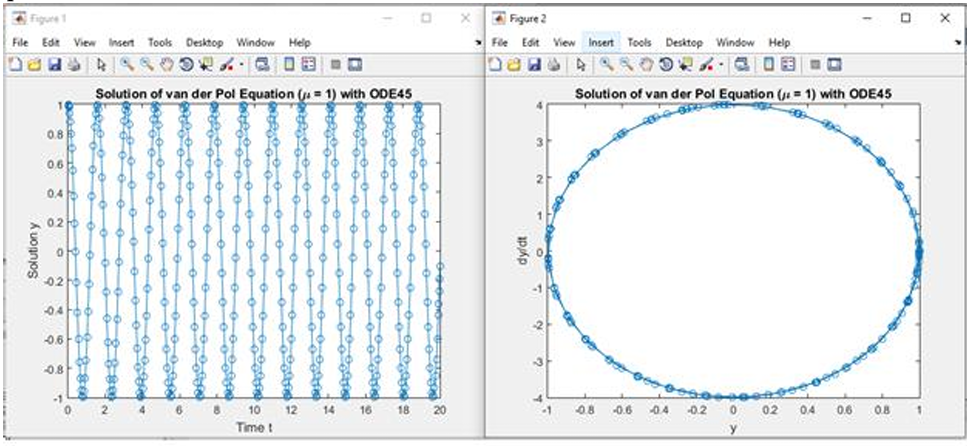
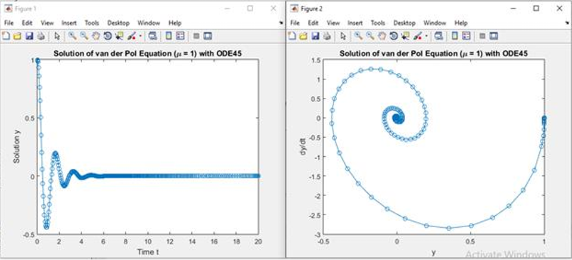
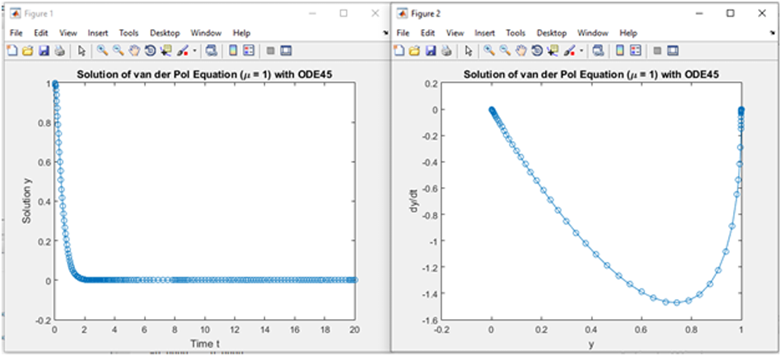
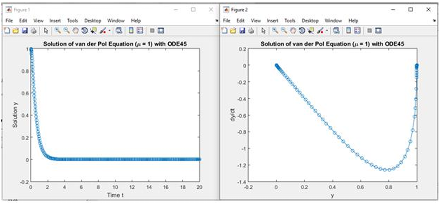

Home / Analysis
Analysis and simulation
We solve the four damping cases numerically, compare our results with the figures from Krcheva (2024), and let you run your own sensitivity analysis. Every graph here is integrated live with a fourth-order Runge-Kutta method.
The four cases
Holding the mass and spring fixed at \( m = 1 \) and \( k = 16 \), and releasing from \( y(0) = 1,\ \dot{y}(0) = 0 \) over the interval \([0, 20]\), the damping coefficient alone moves the system through every regime.
Undamped, c = 0
Underdamped, c = 2
Critically damped, c = 8
Overdamped, c = 10
Replication of Krcheva (2024)
The original paper solves the same four cases analytically and plots them in MATLAB. We reproduced the study with identical parameters and initial conditions, computed our own solutions, and compared them case by case. The analytic solutions match exactly, and our numerical curves reproduce the paper's figures.
Analytic solutions, ours versus the paper
| Case | Krcheva (2024) | Our solution | Agreement |
|---|---|---|---|
| Undamped, c = 0 | \( y = \cos 4x \) | \( y = \cos 4t \) | Match |
| Underdamped, c = 2 | \( y = e^{-x}\cos\sqrt{15}\,x \) | \( y = e^{-t}\cos\sqrt{15}\,t \) | Match |
| Critically damped, c = 8 | \( (1+4)e^{-4x} \) as printed | \( y = (1 + 4t)e^{-4t} \) | Corrected typo |
| Overdamped, c = 10 | \( y = \tfrac{4}{3}e^{-2x} - \tfrac{1}{3}e^{-8x} \) | \( y = \tfrac{4}{3}e^{-2t} - \tfrac{1}{3}e^{-8t} \) | Match |
Figure-by-figure comparison
For each case, our own solution (computed live) sits on the left, and the MATLAB figure reproducing Krcheva (2024) sits on the right. The two agree in shape and timing.
Undamped, c = 0
Our result
MATLAB figure (Krcheva 2024)

Solution \( y = \cos 4t \): steady oscillation between +1 and -1, with a closed elliptical phase plane.
Underdamped, c = 2
Our result
MATLAB figure (Krcheva 2024)

Solution \( y = e^{-t}\cos\sqrt{15}\,t \): decaying oscillation, with an inward spiral in the phase plane.
Critically damped, c = 8
Our result
MATLAB figure (Krcheva 2024)

Solution \( y = (1 + 4t)e^{-4t} \): the fastest return to rest with no oscillation.
Overdamped, c = 10
Our result
MATLAB figure (Krcheva 2024)

Solution \( y = \tfrac{4}{3}e^{-2t} - \tfrac{1}{3}e^{-8t} \): a slow, non-oscillating return to rest.
Sensitivity analysis: response over time
The damping coefficient is the most sensitive parameter in this model. Crossing the critical value \( c_c = 2\sqrt{mk} \) removes the oscillation entirely. Drag any control to recompute the displacement over time, or overlay the whole sweep at once.
The phase plane
Plotting velocity against displacement removes time and shows the system's energy directly. The undamped case traces a closed clockwise ellipse, since energy is conserved and the motion never settles. Adding damping makes the trajectory spiral inward toward the origin as energy is lost.
The critically damped and overdamped cases do not loop at all: the trajectory sweeps out once and returns to the origin. The four cases are shown together on the right, and you can generate the phase plane for any parameters in the sensitivity analysis below.
Open the phase-plane sensitivity analysis →Sensitivity analysis: phase plane
The same system viewed in the phase plane. Drag the controls to watch the trajectory change shape: a closed ellipse with no damping, an inward spiral when underdamped, and a single sweep into the origin once the damping reaches the critical value.